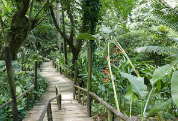
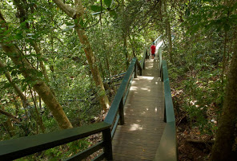

Landmarks to Visit
Garden of the Sleeping Giant
Landscaped park with orchids & walkways
Fijis Museum
The Fiji Museum is a museum in Suva, Fiji located in the capital city's botanical gardens, Thurston Gardens.
Malolo
Malolo is an inhabited volcanic island in the Pacific Ocean, near Fiji.
Kula WILD Adventure Park
Kula WILD Adventure Park is Fiji's biggest Family Fun Park and an ecological preserve in Fiji. It is located on Fiji's largest island, Viti Levu, near Sigatoka.